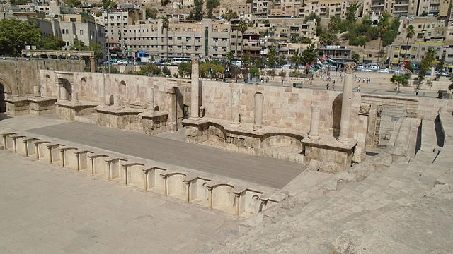

Загальний опис
Античний театр Філадельфії спорудили на південній стороні римського форуму, на правобережжі
пересихаючого потоку Ваді-Амман (наразі вулиця Аль-Хашемі), в долині якого розташовувалась більша (нижня)
частина міста.Театрон споруди створений з використанням схилу пагорбу Джабаль-аль-Джофах. Діаметр його
напівкола становить 69,5 метрів, а сорок два ряди для глядачів розділені на три рівня за допомогою діазом
(широких проходів для глядачів, котрі тягнуться півколом паралельно орхестрі). Всього театр міг вміщувати
біля 6 тисяч осіб.
У верхній частині театрону розташовувався міні-храм Афіни. Припускають, що саме тут
стояла мармурова статуя цієї богині, котра зараз демонструється у Археологічному музеї Амману (знаходиться у
складі споруд на Замковій горі, що височіє на протилежній від театру стороні долини Ваді-Амман). Дві ніші
обабіч храму ймовірно займали статуї імператора Антоніна Пія та його дружини. Фронтальна частина споруди
(скена) мала три рівні у висоту. На 1,5 метри нижче від майданчику для акторів, між скеною та театроном,
знаходиться орхестра філадельфійського театру радіусом 13 метрів.
Історія споруди
Точний час зведення театру невідомий. При розкопках скени знайдений присвячувальний напис «Титу Елію Адріану Антоніну Цезарю Августу та всій його родині», тобто імператору Антоніну Пію, правління якого припало на 138-161 роки н.е. Втім, припускають, що він стосується лише відновлення та оздоблення скени та не може засвідчувати час спорудження театрону.Найбільш поширена технологія зведення античних театрів, за якою більша частина споруди створювалась з використанням природного рел’єфу, забезпечувала їх високу стійкість до землетрусів (котрі були одним з найбільш руйнівних факторів для інших типів античних будівель). Як наслідок, зведений таким чином театр у Філадельфії дійшов до наших часів у доволі доброму, хоча й не ідеальному, стані – фото датоване періодом до 1914 року, показує повне руйнування скени та заповнення орхестри уламками і ґрунтом. З 1957 року у філадельфійському театрі провадились розкопки та відновлювальні роботи, котрі зокрема включали відбудову значної частини скени (майже виключно із сучасного матеріалу). У бічних приміщеннях під завершуючими частинами театрону наразі обладнані експозиції Jordan Museum of Popular Tradition та Jordan Folklore Museum, де зокрема можна побачити декілька зразків мозаїк, доправлених з кількох історичних місць Йорданії та велику експозицію національних нарядів народу Йорданії.
Статуї
Окрім зазначеної вище статуї Афіни у театрі знайшли ще чотири скульптури більшої чи меншої схоронності:
- екіпірованого кірасою імператора (за відсутності голови можливість однозначної ідентифікації відсутня - найімовірніше Адріан або Антонін Пій);
- одягненої жінки;
- торс бога медицини Асклепія (ідентифікований як репліка статуї з пергамського Асклепійона);
- фрагмент нижньої частини зображення Гермеса.
Всі вони виконані з мармуру, а отже були доправлені з інших провінцій (місцевий матеріал дозволяв
виготовляти скульптури з вапняку та базальту).
Проведений аналіз засвідчив, що імператор
виконананий із пентелійського мармуру (славнозвісні каменоломні поблизу Афін), а дві наступні статуї із
проконнеського (регіон Мармурового моря). Що стосується скульптур Афіни та Гермеса, то наразі точно
визначити каменоломню не вдалось – це може бути мармур з Паросу (острову в Егейському морі) або цілого ряду
місцевостей на території сучасної Туреччини (включаючи каменоломню поряд зі славнозвісним центром мистецтва
у Афродісіаді)